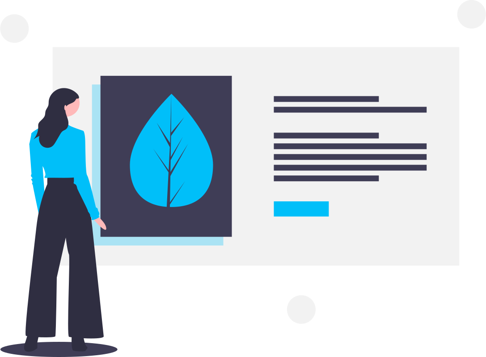

Bluestone Script
Create datapacks faster
BSS makes it easier than ever to create quality datapacks with less code
Faster development
Using BSS allows you to get the same functionality that you already have, but with less code.
High performance
BSS was made with performance in mind. So every line you write will be optimized to only execute when needed.

Easy to addapt
Addapting BSS into your existing datapack is really easy. Things that you already wrote without BSS with work just fine with it.